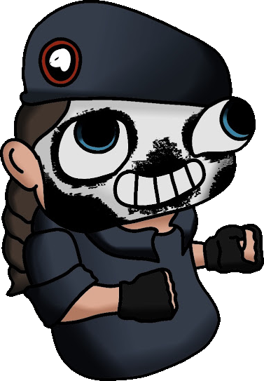

Sviluppatore full stack
Piattaforme web su misura, gestionali, app desktop e mobile e integrazioni di intelligenza artificiale, seguendo i progetti dall’inizio alla fine: dall’analisi all’assistenza dopo il rilascio.
Genova — circa 6 anni di esperienza
Sviluppatore full stack e specialista in integrazioni IA
Firmo i miei lavori come Ouija. Come la tavola, faccio da ponte tra le idee delle persone e la tecnologia.

01 / Profilo
Trasformo le esigenze dei clienti in software che funziona. Da circa 6 anni realizzo piattaforme web su misura, gestionali, app desktop e mobile e integrazioni di intelligenza artificiale presso una software house di Genova, seguendo i progetti dall’inizio alla fine: dall’analisi all’assistenza dopo il rilascio.
02 / Cosa faccio
Piattaforme web su misura e gestionali, seguiti dall’inizio alla fine: dall’analisi all’assistenza dopo il rilascio.
Chatbot collegati a cataloghi prodotti e dati degli ordini, e pipeline OCR assistite dall’IA che estraggono i dati da fatture e documenti d’identità.
App desktop con Electron e app mobile multipiattaforma con Ionic, collegate a backend Laravel tramite API REST.
Aggiornamento di piattaforme esistenti, come il passaggio da Laravel 8 a Laravel 12, e assistenza dopo il rilascio.
03 / Progetto personale
Assistente personale modulare
In corso
04 / Casi studio
I clienti restano anonimi.
Settore dei servizi di cremazione
E-commerce
Azienda di import/export
Piattaforma di affitti brevi
App aziendale su misura
05 / Stack
06 / Esperienza e formazione
Piattaforme web su misura, gestionali, app desktop e mobile e integrazioni di intelligenza artificiale, seguendo i progetti dall’inizio alla fine: dall’analisi all’assistenza dopo il rilascio.